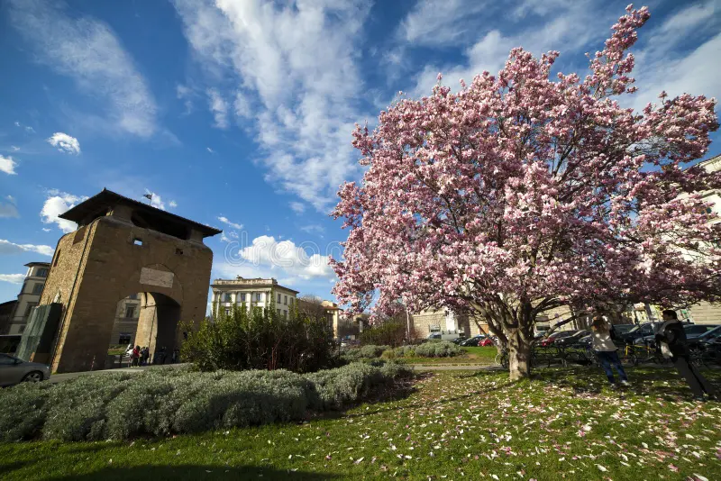

- A magnólia flor é símbolo de pureza, dignidade e perseverança.
- Crescimento lento
- Restos fósseis dessas plantas já foram encontrados em regiões árticas, na América do Norte e na Europa central.
- O gênero Magnolia foi estabelecido em 1703 por Plumier, que o nomeou em homenagem a Pierre Magnol, do Jardim Botânico de Montpellier.
- Até o ano 1700, apenas uma espécie era conhecida.
- Nos jardins europeus, especialmente nos séculos XVIII e XIX, as magnólias se tornaram muito valorizadas. Em cidades como Florença, era comum que colecionadores buscassem reunir o maior número possível de espécies exóticas, criando jardins ricos e variados.
- Muito provavelmente as primeiras plantas com flor que apareceram na história do planeta assemelhavam-se às atuais Magnólias, uma vez que os fósseis de flores mais antigas que se conhecem apresentam estruturas muito idênticas às deste género botânico.

